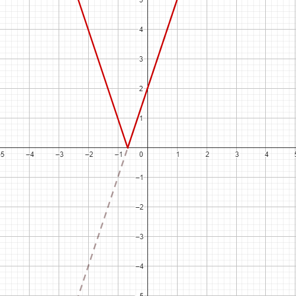
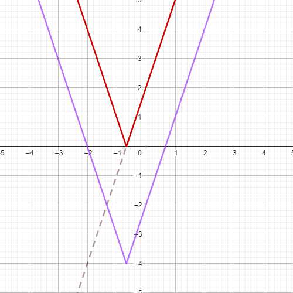

| HOME | 1° Trimestre | 2° Trimestre | 3° Trimestre | Enviar Comentários | Graphic Design |
Para interpretar ou fazer os graficos, é necessário principalmente entender o que é um logarítmo, depois, entender sobre Domínios.
Sobre domínios: o valor do logaritmando deve ser sempre maior que 0, então temos que levar em conta tudo que está dentro de X para saber de onde nossa função começa. Quando descobrimos isso, fazemos uma linha pontilhada vertical no local de início.
Supondo que nossa função é: f(x) = log(x-1)
Então faremos:
x + 1 > 0
Fatos interessantes:
Funções logarítmicas e exponenciais são simétricos.
Se o logarítmo alcançasse seu domínio, o módulo de Y seria infinito.
Descobrindo se é decrescente ou crescente:
Decrescente: 0 < Base < 1
Crescente: Base > 1
Por definição, um logarítmo sempre tem corte em X, mas nem sempre em Y, dependendo de seu domínio.
Para eixo X: logBase(x) = 0
Para eixo Y: logBase(0) = Y
Para desenhar a função:
Primeiramente, calculamos o domínio, e então o desenhamos verticalmente;
Depois, precisamos coletar valores estratégicos da função, que nos ajudem a localizar os pontos, após isso, os interligamos.
Geralmente, na hora de desenhar, pegamos valores que nos ajudam, como por exemplo: em uma função logaritmica com base 2, você pegaria os valores que resultam em 2, 4, 8, 16... no logaritmando.
Comentários:
Entender como a função logarítmica funciona foi um pouco difícil para mim no começo, existem alguns motivos:
1 - Ideia abstrata: A própria ideia do logaritmo é meio estranha de se entender, quando se aplica no gráfico, e tem muitos valores, me senti meio perdido.
2 - Interpretação gráfica: A visualização do gráfico é bem dificil, especialmente quando se está começando no conteúdo.
3 - Contexto prático: Entender a aplicação de funções logarítmicas na vida é meio dificil.
4 - Resolução das Equações Logarítmicas: Quando você está resolvendo as equações, é muito fácil deixar um erro pra trás, se atrapalhar com algo (especialmente com o domínio), errar é muito fácil se for desatento.
É possível dizer que o módulo de um número, é a distância que ele está de 0, já que:
x = |x|
-x = |x|
também poderia ser representado por:
|x| = ±x
Para resolução, levamos em conta o lado não absoluto da função como positivo, e depois negativo. EX:
|3x - 5| = 7
Para a primeira:
3x - 5 = 7
3x = 7 + 5
3x = 7 + 5
3x = 12
x = 12 / 3
Já para a segunda:
-(3x - 5) = 7
-3x + 5 = 7
-3x = 7 - 5
-3x =2
R = {-2/3, 4}
Mas também existem outros casos, como:
|2x - 3| = |5 - x|
Nesses momentos, continuamos fazendo duas contas, uma sem nenhum módulo, e outra com um lado negativo. Já que são equações não faz sentido fazer 4 contas diferentes.
Para a primeira:
2x - 3 = 5 - x
3x = 8
Já para a segunda:
-2x + 3 = 5 - x
-x = 2
R = {8/3, -2}
O que faremos vai ser: construimos a função dentro do módulo normalmente, depois convertemos qualquer valor negativo para positivo, e então, se a função tiver algo fora do módulo, aplicamos.
O exemplo mais fácil seria com função afim, então é o que vou fazer.
Função exemplo: f(x) = |3x + 2| - 4
Primeiro passo: construímos só o que está dentro do módulo.
Depois, invertemos o que é negativo.
E só então, adicionamos o que está fora.
OBS: Lembre-se que as raízes mudam, e as vezes algo vai possuir mais de 2, como uma função quadrática modular que vai para o lado negativo
Comentários:
O conteúdo não é muito dificil, a ideia do módulo pode parecer estranha no começo, mas depois você se acostuma, a única coisa que me causou um pouco de dificuldade foi calcular as novas raízes e fazer corretamente a adição dos que ficaram de fora. Creio que me saí bem.
Uma progressão aritmética (PA) é uma sequência numérica em que a diferença entre quaisquer dois termos consecutivos é igual. Essa diferença é chamada de razão e é denotada pela letra "r".
Sobre sequências numéricas: elas são várias casas que seguem um padrão de aumento, diminuição ou de continuidade, EX:
{1, 2, 3, 4, 5, ...}
{5, 4, 3, 2, 1, ...}
{5, 5, 5, 5, 5, ...}
Uma PA tem uma relação direta com funções afim
Comentários:
Achei fácil entender o conteúdo, não houve nenhuma dificuldade e o conteúdo conseguiu permear bem.
Uma progressão geométrica (ou PG) é uma sequência de números em que cada termo subsequente é obtido multiplicando-se o termo anterior por uma razão, chamada de quociente, e representada por "q".
Sobre sequências de uma PG: elas são várias casas que seguem um padrão de aumento, diminuição ou de continuidade, EX:
{2, 4, 8, 16, 32, ...}
{-1, -2, -4, -8, -16, ...}
{7, 0, 0, 0, 0, ...}
{5, -5, 5, -5, 5, ...}
{5, 5, 5, 5, 5, ...}
Uma PG tem uma relação direta com funções exponenciais
Comentários:
Um pouco mais fácil de se perder, porém, se você tomar cuidado e ficar ligado especialmente nos cálculos de exponencial, fica mais fácil. Não notei muita dificuldade no entendimento.